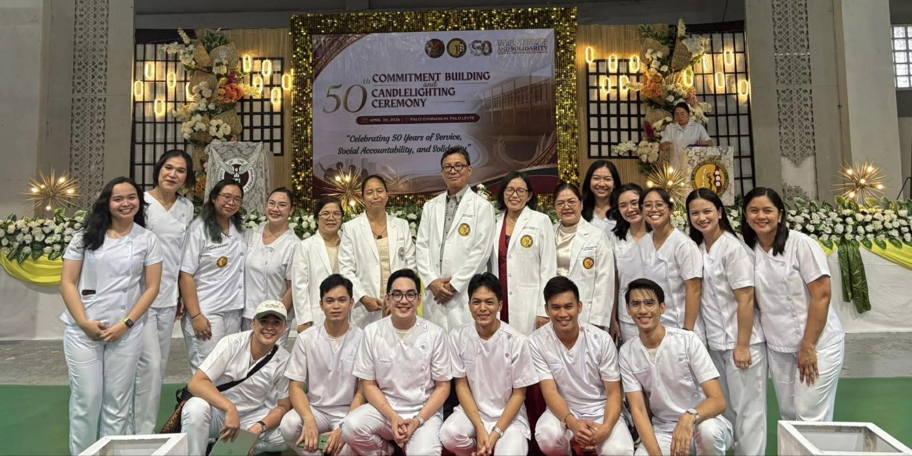

Community-partneredWe work with communities as partners in health.

UP Manila School of Health Sciences
Community-Based
Community-Based
Medical Education
A health worker for every village.
Learning medicine with communities—understanding health in context, serving alongside local partners, and building continuity across generations of learners.
Student-centeredExperiential learning across the continuum of care.
Service-orientedGrounded in compassion, service, and social responsibility.
Nation-buildingPreparing health workers for every village.
Community as classroom.
Community-based medical education immerses learners in real local health systems, where clinical care, public health, families, livelihoods, governance, and access to services intersect.
Learn more about CBM →Service, accountability, and continuity.
The SHS tradition links health professions education to the needs of underserved communities, emphasizing socially accountable practice and local health-system strengthening.
Discover the toolkit →Longitudinal by design.
Community learning builds over time: preparation, entry, assessment, planning, implementation, monitoring, reflection, and useful handover to the next batch.
View the pathway →
Learning Pathway
From community entry to continuity.
The toolkit follows the actual workflow of community clerkship and internship.
Prepare
Review the site, previous work, scope, and referral pathways.
→
Understand
Know the community, stakeholders, health system, and local context.
→
Assess
Identify needs, strengths, priorities, and evidence.
→
Act
Plan and implement with community and health-system partners.
→
Monitor
Track progress, outcomes, lessons, and sustainability.
→
Handover
Document what matters so the next batch can continue the work.
Current Community Sites
Partner communities in Leyte
Initial sites included in the current community clerkship and internship toolkit planning.
P
Palo
Leyte
Community learning siteA
Alangalang
Leyte
Preceptor: Dr. Angelita JayaD
Dagami
Leyte
Community learning siteT
Tolosa
Leyte
Preceptor: Dr. Maria Sheryl P. IndenciaT
Tanauan
Leyte
Community learning siteD
Dulag
Leyte
Community learning site
Community Health Toolkit
Your digital companion for community immersion, project continuity, and institutional memory.
Learning ResourcesGuides, modules, references
Community ProjectsOngoing and completed work
Handover SystemStructured continuity records
DirectoryPeople, preceptors, partners
Forms & TemplatesDocuments for community work
Resources
Built to support learning without losing institutional memory.
- Integrated community medicine manual
- Orientation and predeployment guides
- Community diagnosis templates
- Monitoring and evaluation tools
- Project continuity and handover forms
- Verified health-system directory

UP Manila School of Health Sciences
Community-Based Medicine
Palo, Leyte · Community Health Toolkit working prototype
“A health worker for every village.”